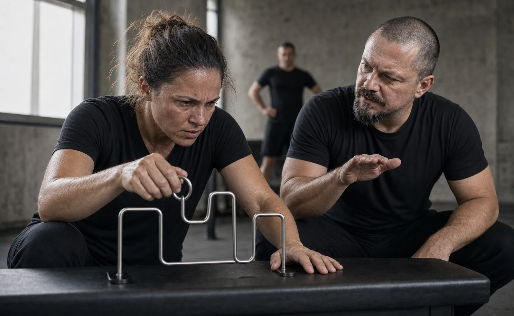

Konflikt a odpor
Obrannost, protiútok, stažení se nebo ztráta schopnosti naslouchat.
Lídři a manažeři
Trénink pro vás, pokud chcete pod tlakem zachovat úsudek, vlastní výkon a schopnost vést — a zároveň jednat častěji v souladu se sebou, s menším přenosem napětí do vztahů a osobního života.
Lídr jako člověk
Když dokážete vlastní reakci zachytit dříve, snáze se opřete o zkušenosti, hranice a hodnoty. Nejde jen o lepší vedení lidí, ale také o více vnitřní jistoty, méně následného přemílání a spokojenější fungování v práci i osobním životě.
Obrannost, protiútok, stažení se nebo ztráta schopnosti naslouchat.
Tlak na rychlost, odpovědnost, nejistota a lpění na první variantě.
Způsob, jakým lídr reaguje, mění ochotu lidí sdílet problémy a nést odpovědnost.

Odborné čtení pro lídry
Proč i kompetentní člověk v rozhodující chvíli chybuje a proč se na samotnou improvizaci nedá spoléhat.
Co se v kritické chvíli děje s úsudkem a proč samotná praxe bez cíleného tréninku nemusí stačit.
Přečíst článek →Možné formáty
Základní diagnostika reakcí lídrů, společný jazyk a první praktický postup.
Celodenní nácvik konfliktu, zpětné vazby, odporu a rozhodování v nejistotě.
Opakované scénáře, individuální zpětná vazba a přenos do reálných situací vedení.
Pravidelný trénink, supervize a práce s konkrétními situacemi vedení týmu.
Nejčastější otázky pro lídry
Praktické odpovědi k odbornému základu, bezpečí, důvěrnosti a volbě vhodného formátu.
Zkušenost ani kompetence nemizí. Akutní stres ale může měnit pracovní paměť, kognitivní flexibilitu, pozornost a způsob rozhodování. Proto se může objevit obrannost, lpění na první variantě, přílišná kontrola nebo naopak odklad dalšího kroku. Dopad je vždy závislý na situaci, intenzitě a konkrétním člověku.
Rozpoznání prvních signálů vlastní reakce, regulaci aktivace, návrat k širšímu pohledu a volbu dalšího kroku. Nácvik se vztahuje ke konfliktu, odporu, zpětné vazbě, nepříjemnému rozhodnutí nebo jiné situaci, v níž reakce lídra ovlivňuje celý tým.
Výzkum podporuje výchozí mechanismy: akutní stres může zhoršovat pracovní paměť a kognitivní flexibilitu a ovlivňovat rozhodování. Výzkum stresového nácviku podporuje princip postupné přípravy na výkon pod zátěží. Tyto práce ale nejsou přímým ověřením programu Resilium; Resilium je vlastní tréninkový rámec a negarantuje univerzální výsledek.Vybrané odborné zdroje: Shields, Sazma & Yonelinas (2016), Starcke & Brand (2012) a Driskell, Johnston & Salas (2001).
Můžete pracovat s typem situace bez jmen a citlivých detailů. Předem se vyjasní hranice sdílení a zpětné vazby. Cílem není hodnotit osobnost lídra, ale nacvičit konkrétní jednání v situaci, kterou ve své roli skutečně potřebuje zvládat.
Není to psychoterapie, psychologická diagnostika ani zdravotní péče. Od běžného coachingu se liší důrazem na praktický nácvik reakce v bezpečně řízené zátěži. Může však doplnit leadership development nebo individuální práci s manažerem.
Čtyřhodinový formát přináší společné pochopení a první praktický postup. Celodenní a dvoudenní program dávají více prostoru pro opakování, různorodé scénáře a individuální zpětnou vazbu. Dlouhodobá spolupráce je vhodná, pokud má být změna ukotvena v širší praxi vedení nebo organizace.
Konzultace pro lídra
Popište stručně konflikt, rozhodnutí nebo typ rozhovoru, který se ve vaší roli opakuje.